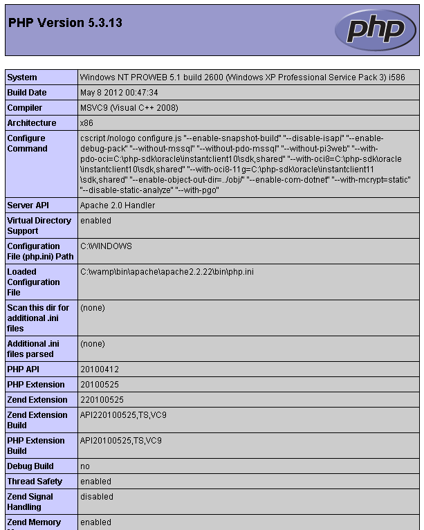

Ejercicios de Introducción a PHP
Crea un proyecto **sesion02** e introduce ahí todos los ficheros que vayas creando. Posteriormente se irán subiendo a vuestro espacio en el servidor para que sean corregidos ahí directamente.
Un ejemplo un poco más complejo
Dentro del proyecto sesion02, crea un fichero llamado _today.php_ y copia el siguiente código:
<!DOCTYPE html>
<html>
<head>
<title> Ejemplo PHP </title>
</head>
<body>
<p>Hoy es:
<?php
echo date('l, F jS Y');
?>
<p>
</body>
</html>
Accede al fichero _today.php_ a través del servidor web local (http://localhost/sesion02/2.8.1/today.php). El servidor web procesará el código PHP, devolviendo al navegador tan sólo el código HTML. De hecho, si usamos la opción del navegador para visualizar el código fuente del documento recibido (botón derecho -> ver código fuente), no veremos ningún rastro del código PHP original. Tan sólo veremos:
<html>
<head>
<title>Fecha de hoy</title>
</head>
<body>
<p>Hoy es
Saturday, October 5th 2013 </p>
</body>
</html>
El navegador interpretará este código HTML y mostrará el la fecha actual del ¿servidor o del cliente?.
Uno de los objetivos de esta sesión es que te familiarizes con la ayuda de PHP. Por ello, accede al manual y busca información de la
funcion date.
¿Qué significado tienen las letras
**'l, F jS Y'**?
Dentro del fichero today.php da respuesta a la pregunta en un comentario multilínea (/**/)
Aunque no todavía no hemos hablado de las funciones en PHP, date es una ellas, la forma de invocarlas es similar a otros lenguajes como C, Java, Perl y otros (verás que en PHP hay funciones muy similares a las de otros lenguajes)
(OPTATIVO) Añadiendo más funcionalidad al ejercicio anterior
Vamos a añadir un poco más de complejidad al ejercicio anterior mostrando la hora actual justo después de la fecha. Para ello usa el operador de concatenación **"."** justo al final la invocación a la llamada date(..) concatenando mostrar este cadena **y son las HH:MM:SS horas** (HH:horas, MM:minutos y SS:segundos)
<html>
<head>
<title>Fecha de hoy</title>
</head>
<body>
<p>Hoy es
Saturday, October 5th 2013 y son las 09:18:15 horas. </p>
</body>
</html>
Formularios y protocolo HTTP
En este ejercicio vamos a seguir profundizando en la sintaxis básica del lenguaje apoyándonos en el estudio del manejo de los datos recibidos por PHP a partir de un formulario.
Creamos un fichero llamado **phpinfo.php** con el siguiente contenido:
<html>
<head>
<title>phpinfo</title>
</head>
<body>
<?php
phpinfo();
?>
</body>
</html>
Si consultamos el manual de PHP en http://php.net/manual/es/function.phpinfo.php, veremos que **phpinfo()** es una función que genera como salida un documento con una gran cantidad de información sobre la versión de PHP utilizada y el entorno en el que se encuentra (como por ejemplo, datos sobre el servidor web). (parte de esa información proviene del fichero de configuración de PHP llamado **php.ini**) El resultado sería algo parecido a lo que se muestra en la siguiente figura:

Hace ya unos cuantos años, cuando los proveedores de servicios que ofrecían espacio web gratuito junto con PHP4 y una base de datos MySQL, recomendaban crear un pequeño script PHP con el código anterior para comprobar que la instalación de la arquitectura LAMP era correcta. Si veíamos la información del fichero php.ini, es que la instalación había sido correcta.
Además es una manera rápida y eficaz de consultar la versión de PHP que se está ejecutando. Para más inri, los paquetes WAMP y XAMPP incluyen accesos directos a la ejecucion de la función phpinfo(). En WAMP, podéis ejecutarla accediendo a esta url: http://localhost/?phpinfo=1
Ahora podremos probar a acceder a nuestra página con la siguiente URL:
http://localhost/sesion02/2.8.3/phpinfo.php?id=1&accion=test
En este caso estaremos pasando dos párametros (id y acción) junto con sus respectivos valores (1 y test) al servidor mediante el método GET. En la página generada como resultado podemos buscar, por ejemplo, la variable QUERY_STRING dentro de la sección **Apache environment**. Esta es una variable que genera automáticamente PHP y que contiene los datos incluidos en la query_string de la URL, tal cual fueron escritos. Lo podemos visualizar en la siguiente figura:

Otra sección importante es la muestra la información de la cabeceras HTTP intercambiadas entre cliente y servidor. La siguiente imagen podemos ver un ejemplo:

También podremos ver, bajo la sección **PHP variables**, cómo se han creado una serie de variables asociadas a las siglas EGPCS (Environment, GET, POST, Cookie y Server). Por ejemplo, tenemos las variables **_REQUEST["id"]** y **_GET["id"],** ambas con valor 1, y las variables **_REQUEST["accion"]** y **_GET["accion"]**, ambas con el valor **test**. Gracias a estas variables podremos acceder en el interior del código PHP a los datos introducidos por el usuario en un formulario.
")
Podemos personalizar lo que muestra la función phpinfo() si pasamos como parámetro un constante predefinida de PHP. Averigua como mostrar solo la información mostrada por la combinación EGPCS en el script test.php
Con respecto al método **POST**, el envío de datos se realiza a través de la propia petición HTTP, sin mostrar nada en la URL. Vamos a verlo también con un ejemplo, basado en el archivo **test.php** creado en el ejemplo anterior.
Creamos el siguiente formulario HTML en un fichero llamado **formpedidos.html**:
En este formulario se han introducido algunos elementos HTML que no siguen el estándar 4.01. Se ha hecho así para poder dotarle de un mejor aspecto sin necesidad de utilizar CSS.
<html>
<title>Formulario de pedidos</title>
<body>
<form action="test.php" method="post" >
<table>
<tr bgcolor="#cccccc" >
<td width="150" >Producto</td>
<td width="15" align="center" >Cantidad</td>
</tr>
<tr>
<td>Barras de pan</td>
<td align="center" >
<input type="text" name="barras" size="3" maxlength="3" >
</td>
</tr>
<tr>
<td>Ensaimadas</td>
<td align="center" >
<input type="text" name="ensaimadas" size="3" maxlength="3" >
</td>
</tr>
<tr>
<td>Napolitanas</td>
<td align="center" >
<input type="text" name="napolitanas" size="3" maxlength="3" >
</td>
</tr>
<tr>
<td colspan="2" ><hr></td>
</tr>
<tr>
<td width="60&" >Como encontró esta web?</td>
<td>
<select name="desde" >
<option value="1" >Soy un cliente habitual</option>
<option value="2" >Anuncio del periódico</option>
<option value="3" >Páginas amarillas</option>
<option value="4" >Google</option>
</select>
</td>
</tr>
<tr>
<td colspan="2" align="center" ><br /></td>
</tr>
<tr>
<td colspan="2" >
<input type="submit" value="Enviar pedido" name="submit" >
</td>
</tr>
</table>
</form>
</body>
</html>
Obsérvese como el campo **action** del formulario apunta hacia nuestro fichero **test.php**.
Esto quiere decir que al pulsar el botón de envío de datos, éstos serán enviados a la página **test.php** por medio del método POST (no aparecerá ningún dato en la URL). Si buscamos entre toda la información proporcionada por **test.php**, podremos ver que se han creado unas cuantas variables que nos permitirían acceder desde el interior del código PHP a los datos del formulario, a partir de los nombres asignados a los campos del formulario en el código HTML.
En concreto, deberemos podemos buscar los arrays **_REQUEST** y **_POST** para comprobarlo.
Para aprender a cómo manejar los datos del formulario desde el interior del código PHP empezaremos con dos sencillos pasos. Modificaremos el valor del atributo **action** del formulario de **formpedidos.html** para que apunte a un nuevo fichero que vamos a crear, cuyo nombre será **procesar_pedido.php** y cuyo contenido será el siguiente:
<html>
<head>
<title>Panadería Berta – Resultados del pedido</title>
</head>
<body>
<h1>Panadería Berta</h1>
<h2>Resultados del pedido</h2>
<?php
echo '<p>Formulario de pedido procesado correctamente</p>';
?>
</body>
</html>
Como podemos observar, el contenido del fichero se divide en:
- código HTML:
</head>
<body>
<h1>Panadería Berta</h1>
<h2>Resultados del pedido</h2>
- etiquetas PHP (de inicio y terminación), que indican qué parte del fichero es código PHP:
<?php ... ?>
- y código PHP. En concreto, una instrucción cuya función es añadir al código HTML enviado al navegador lo que se encuentra entre comillas simples. Esta instrucción, como cualquier otra instrucción PHP, deberá terminar siempre con el símbolo de punto y coma:
echo '<p>Formulario de pedidos procesado correctamente</p>';
Etiquetas de inicio y fin del parser PHP:
<?php echo 'Formulario procesado correctamente'; ?>
Aunque en versiones anteriores han existido otras formas de iniciar y cerrar el código PHP, actualmente este es el único estilo que se podrá utilizar.
Si nos fijamos en el fichero **procesar_pedido.php** veremos que realmente no se está haciendo nada con los datos enviados con el formulario, así que vamos a ver cómo acceder a ellos.
¿Cómo podemos acceder a esos valores? PHP maneja un conjunto de variables que crea automáticamente a partir de los datos recibidos, ya sea mediante la petición HTTP en el caso de un formulario de tipo POST, como a través de la query string en el caso de un formulario de tipo GET. Hemos de tener en cuenta algo muy importante, y es que en PHP ** los nombres de variable siempre empiezan con el símbolo $**.
**Acceso a variables según su procedencia**: se basa en el uso de un array generado automáticamente por PHP al recibir los datos del formulario (hablaremos en profundidad sobre los arrays más adelante), como por ejemplo **$\_POST['barras']**.
**Según el método de envío**, se generará alguno de los siguientes arrays:
Si el formulario hizo uso del método POST, el array será $_POST (por ejemplo, podemos acceder a la cantidad de barras introducida por el usuario mediante $_POST['barras']).
Si el formulario hizo uso del método GET, el array será $_GET (por ejemplo, podemos acceder a la cantidad de barras introducida por el usuario mediante $_GET['barras']).
En ambos casos, se creará también un array llamado $_REQUEST (por ejemplo, podemos acceder a la cantidad de barras introducida por el usuario mediante $_REQUEST['barras']).
Se trata de tres arrays superglobales (veremos qué significa esto más adelante). La ventaja es que con este método tendremos muy clara la procedencia de los datos (GET o POST). La desventaja principal es que es incómodo trabajar con nombres de variable tan largos. Una solución para esto es crear variables al inicio del fichero que contengan una copia de estos valores:
$barras = $_POST['barras'];
Modificamos _procesar_pedido.php_ para que realmente se haga uso de los datos del formulario:
<?php
// Creamos nombres de variables cortos
$barras = $_POST['barras'];
$ensaimadas = $_POST['ensaimadas'];
$napolitanas = $_POST['napolitanas'];
?>
<html>
<head>
<title>Panadería Berta - Resultados del pedido</title>
</head>
<body>
<h1>Panadería Berta</h1>
<h2>Resultados del pedido</h2>
<?php
/* Procesamos el pedido */
echo '<p>Su pedido es el siguiente: </p>';
echo '<p>Barras solicitadas: <strong>' . $barras . '</strong><br>';
echo 'Ensaimadas solicitadas: <strong>' . $ensaimadas . '</strong><br>';
echo 'Napolitanas solicitadas: <strong>' . $napolitanas . '</strong></p>';
?>
</body>
</html>
Lo único que hará nuestro ejemplo será añadir al código HTML devuelto al navegador un párrafo en el que se mostrará el valor de algunos de los campos del formulario (concretamente, la cantidad de productos del pedido). Para ello hacemos uso de las variables _$barras_, _$ensaimadas_ y _$napolitanas_ que hemos creado a partir de los datos recibidos por medio del array _$_POST_. Al hacer esto podremos acceder a la información del formulario de una manera más manejable.
En el segundo bloque de código PHP que hemos añadido podemos ver un ejemplo de **concatenación de cadenas**. Este operador permite construir cadenas de caracteres a partir de cadenas más pequeñas y otros tipos de datos. En nuestro ejemplo, para cada producto hemos creado una cadena con un texto y el número de unidades de dicho producto. La sintaxis requiere el uso de comillas simples para las subcadenas y el operador punto para unir diferentes partes de la nueva cadena:
echo 'Barras solicitadas: <strong>' . $barras . '</strong><br>';
Otra forma posible de conseguir el mismo resultado es utilizar las comillas dobles. Cualquier variable que se encuentre entre comillas dobles será sustituida por su valor. Sin embargo, este método no es válido para el caso de arrays, en el que tendremos que utilizar una construcción como la anterior.
echo "Barras solicitadas: <strong>$barras</strong><br>";
Recuerda que solo podemos añadir variables a la cadena de esta forma con comillas dobles, no con comillas simples. Si hubiéramos tecleado lo siguiente:
echo 'Barras solicitadas: <strong>$barras</strong><br>';
se hubiera enviado la siguiente secuencia al navegador junto al resto del código HTML:
Barras solicitadas: <strong>$barras</strong><br>
Se deja como ejercicio al lector comprobar qué es lo que ocurriría en el caso de que el método de envío del formulario fuera GET y modificar el código para que todo volviera a funcionar correctamente.
Por úlimo añade al script **procesar_pedido.php** el siguiente código, para que una vez que el usuario introduzca su pedido desde el formulario se le muestre el precio total del mismo incluyendo el IVA:
$nproductos = $barras + $ensaimadas + $napolitanas;
$total_acumulado = $barras * 2 + $ensaimadas * 10 + $napolitanas * 4;
echo '<p><strong>Subtotal:</strong>'.number_format($total_acumulado,2).' €<br>';
$impuestos = 0.21; // iva al 21%
$total_acumulado = $total_acumulado * (1 + $impuestos);
echo '<strong>Total IVA incluido (21%):</strong>' . number_format($total_acumulado,2).' €</p>';
La función number_format devuelve una cadena en la que se expresa el número pasado como primer parámetro como un número real con tantos decimales como se indica en el segundo parámetro. Más información en el manual de PHP: http://www.php.net/manual/es/function.number-format.php
Constantes
Define constantes en _procesar_pedido.php _ para almacenar el precio de los productos de la panadería, así como para almacenar el IVA. Utiliza las constantes en la parte del código donde corresponda.
Comprobación de los datos de entrada
Añadir el código necesario a _procesar_pedido.php_ para que se compruebe que se han introducido valores en todos los campos del formulario de pedidos de la panadería. En el caso en el que algún campo esté vacío, mostrar un mensaje de error y terminar la ejecución del script PHP. Para ello, busca información sobre las funciones _boolean isset(mixed var)_ y _boolean empty(mixed var)_.
Por otra parte, se deberá también comprobar que el número de unidades de cada producto del pedido sea un número mayor o igual que cero.Para esto nos podemos apoyar de la función _is_numeric(mixed var)_ , consultando la documentación de PHP para comprender su funcionamiento.
En ambos casos será necesario utilizar la instrucción _if_ . Se puede consultar su sintaxis en el ejercicio de estructuras de control. Para interrumpir la ejecución del script utiliza la función _die()_.
Conversión de tipos
Añadir el código necesario para convertir los datos obtenidos del formulario (que serán cadenas de texto) a su tipo de datos correspondiente.
Estructuras de control
Modificar el formulario HTML añadiendo un nuevo campo que permita escoger el tipo de cliente (PARTICULAR o EMPRESA) mediante un cuadro de selección (elemento `
Añadir otro campo al formulario HTML que le permita indicar al cliente el número de copias que desea obtener de la salida proporcionada por _procesar_pedido.php_. En este último fichero hacer los cambios necesarios para que se muestre la salida tantas veces como lo haya solicitado el cliente.
Para resolver este ejercicio deberás hacer uso de las estructuras de control de PHP, que no han sido explicadas anteriormente, pero que son muy parecidas a las de cualquier lenguaje de programación. A continuación tienes unos cuantos ejemplos. En primer lugar, un ejemplo de uso de _if..else_:
if ($desde == 1)
echo 'Soy un cliente habitual';
elseif ($desde == 2)
echo 'Anuncio de periodico';
elseif ($desde == 3)
echo 'Paginas amarillas';
elseif ($desde == 4)
echo 'Google';
else
echo 'No nos ha indicado como nos encontro';
Un ejemplo de uso de _switch_:
switch($desde)
{
case '1':
echo 'Soy cliente habitual';
break;
case '2':
echo 'Otros';
break;
}
Un ejemplo de _while_ :
$contador = 0;
while ($contador <= 10)
{
echo $contador;
$contador--;
}
Un ejemplo de _do..while_ :
$contador = 0;
do
{
echo $contador;
$contador--;
} while ($contador <= 10)
Y por último un ejemplo de _for_ :
for ($contador = 0; $contador <= 10; $contador++)
{
echo $contador;
}
(OPTATIVO) Sintaxis alternativa de las estructuras de control
El lenguaje PHP dispone de una sintaxis alternativa para las estructuras de control. Esta sintaxis será utilizada más adelante durante el curso para la generación de plantillas. Su utilidad es mostrar estas instrucciones con una sintaxis más clara para aquellas personas que no sepan programar. Por ejemplo, el siguiente código:
<?php
if ($prueba)
{
echo "Hola\n";
}
?>
podría haber sido expresado en PHP de la siguiente manera:
<?php if ($prueba): ?>
<?php echo "Hola\n” ?>
<?php endif; ?>
Tienes una referencia completa sobre esta sintaxis aplicada a las estructuras de control enumeradas en el ejercicio anterior en la dirección siguiente: http://php.net/manual/es/control-structures.alternative-syntax.php.
En este ejercicio deberás repetir todo lo que se te pidió en el ejercicio anterior (diferente descuento según el tipo de cliente y repetir varias veces la salida) pero utilizando exclusivamente esta nueva sintaxis.